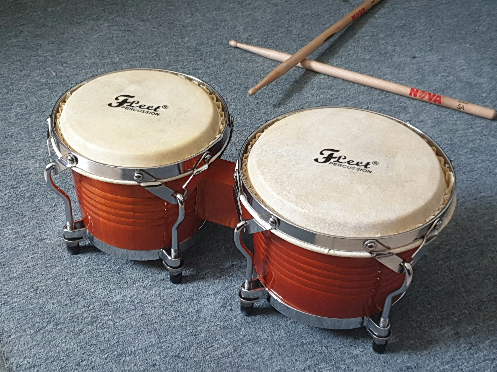

Bongos
Bongos are a matched pair of small open-bottomed hand drums. The smaller drum is called the macho and the larger drum is called the hembra. Played together, they create a high and low voice known for its lively, conversational sound.
How it makes sound
The two heads are respectively tuned to different pitches, with one drum typically around 5 inches, and the other drum about 7 inches in diameter. The heads are nailed or rod-tensioned to a wooden shell.
A player usually holds the bongos between the knees while seated, although stands are common in contemporary performance. The fingers and palms produce open tones, muted tones, slaps, and touches near the rim. The two heads are tuned in relation to one another, so the pair complement each other rather than sounding like two unrelated drums.
Bongo technique depends on relaxed hands and clear contrast between strokes. A muted stroke keeps the head close to the fingers, while an open stroke lets the head ring. The player can also strike the shell or rim for additional variations.
History and development
Bongos developed in eastern Cuba during the nineteenth century, specifically for Latin American dance music. They are closely associated with son cubano, a Cuban style that combines Spanish guitar-family instruments, African-derived percussion, and vocal traditions. Their history reflects African and European musical influences meeting in Cuban communities. In a son ensemble, the bongos interact with voices, guitar-family instruments, bass, and larger percussion instruments.
The instrument's name seems to have derived from the Bantu word "ngoma," which means drum. Through evolution and similarity to another word mbongo, the name became "bongo". The instrument seems to have replaced the earlier drum called the boku, which was typically used in pairs and slung over the knee. The bongo's smaller size and higher pitch made it more suitable for the fast, syncopated rhythms of son music. However, other drums in the region can be attributed to the bongo's development (which are called the tahona).
Recordings and touring ensembles carried the bongo sound beyond Cuba. Players in jazz, salsa, popular music, and educational ensembles adapted its patterns while continuing to draw on the instrument's Cuban rhythmic identity. The 1920's were an interesting time for the bongo, as they were first played in the United States at this time, but were also banned in 1929 alongside other drums in Cuba. The bongo would spread over the course of time, especially in the 20th century, where it became a taple of Latin American music, like bachata, salsa, and merengue.
Here, Latin bands in the United States spread the bongo's sound across the country. New York City became a hub for Latin music, and the bongo was a key part of the sound. The instrument's portability and expressive range made it popular in both professional and amateur ensembles.
Traditional bongos use wooden shells and natural animal-skin heads. Modern instruments may use synthetic heads and hardware that makes tuning more stable. The shells are joined by a small bridge or connecting block, and the open bottoms allow the drum bodies to project directly toward the listener.

Listening details
- Macho: The smaller, higher-pitched drum in the pair.
- Hembra: The larger, lower-pitched drum in the pair.
- Martillo: A commonly taught bongo pattern whose name means hammer in Spanish.
Instrument profile
For further study, visit Encyclopaedia Britannica's bongo drum entry and Wikipedia's bongo drum entry